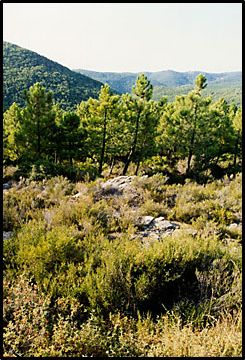
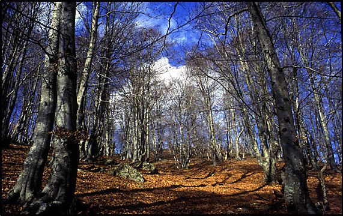
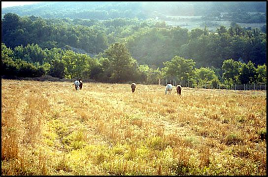
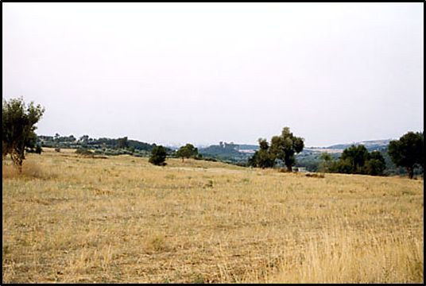
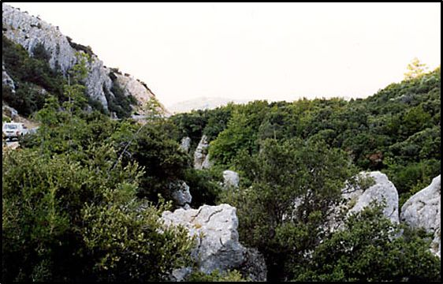
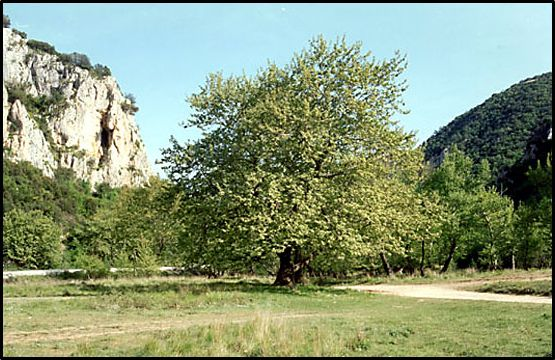
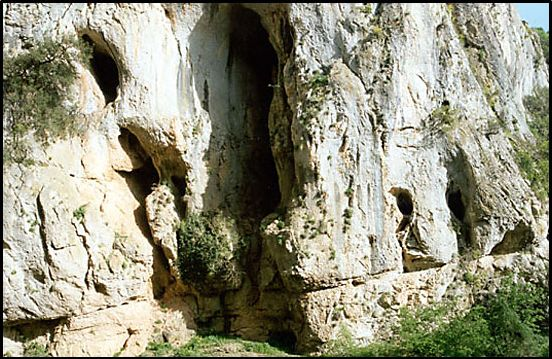

Βιοτικά στοιχεία του δάσους
Βλάστηση - Χλωρίδα
Βλαστητικά η περιοχή ανήκει στην παραμεσογειακή ζώνη βλάστησης (Quercetalia pubescentis) η οποία εμφανίζεται με την υποζώνη Ostryo - Carpinion. Σε πολλές θέσεις της περιοχής, ιδιαίτερα προς την Κίρκη, η φυσική βλάστηση έχει αντικατασταθεί από αναδασώσεις Τραχείας (Pinus brutia), Μαύρης (P. nigra) και Θαλασσίας πεύκης (P. maritima).
Ο Εριολόβος (Eriolobus trilobatus) είναι ένας θάμνος ή μικρό δέντρο το οποίοεμφανίζεται στους φυτοφράκτες ανάμεσα στις καλλιεργούμενες εκτάσεις ανατολικά από τον Άβαντα, ή μέσα στα δάση των φυλλοβόλων πλατυφύλλων και σύμφωνα με το Κόκκινο Βιβλίο των Απειλούμενων και Σπάνιων Φυτών, χαρακτηρίζεται ως τρωτό είδος. Το είδος αυτό είναι ίσως ο σπανιότερος θάμνος της Ευρώπης, με πολύ περιορισμένη εξάπλωση στο νομό Έβρου και ελάχιστα μεμονωμένα άτομα στη νότια Βουλγαρία. Η παρουσία του στο νομό μειώθηκε σημαντικά από τις εκτεταμένες αναδασώσεις με πεύκα στο κεντρικό τμήμα του νομού (όπου βρέθηκε η κύρια εξάπλωση του), αλλά έχει εντοπιστεί έστω και μεμονωμένα μέχρι το χωριό της Νίψας.
Η Cephalanthera epipactoides, έχει εντοπιστεί στην περιοχή και σύμφωνα με το Κόκκινο Βιβλίο των Φυτών, χαρακτηρίζεται ως τρωτό.
Η ορχιδέα Orchis punctulata, έχει εντοπιστεί στην περιοχή και σύμφωνα με το Κόκκινο Βιβλίο των Φυτών, χαρακτηρίζεται ως κινδυνεύον.
Τύποι βιοτόπων
Δασοσκεπείς εκτάσεις
Η περιοχή καταλαμβάνεται από μεγάλα και συνεχόμενα ορεινά και ημιορεινά δάση πλατυφύλλων. Σε μία μικρή έκταση στο δάσος Λουτρού – Αετοχωρίου υπάρχει φυσικό δάσος Τραχείας πεύκης σε μίξη με Μαύρη πεύκη.
Στα ορεινά της περιοχής Αισύμης – Λεπτοκαρυάς εμφανίζονται δάση οξυάς - δρυός. Παλαιότερα σε αυτή τη ζώνη κυριαρχούσαν τα δάση οξυάς (Fagus sylvatica), αλλά εξαιτίας πυρκαγιών στο παρελθόν τα δάση αυτά είχαν υποβαθμιστεί και υποχωρήσει. Σήμερα με καλλιεργητικές επεμβάσεις από το δασαρχείο Αλεξανδρούπολης, τα δάση της οξυάς αναπτύσσονται ικανοποιητικά και εμφανίζουν τάσεις επέκτασης εις βάρος της δρυός (Quercus spp).
Στα ημιορεινά, που είναι και η μεγαλύτερη έκταση της περιοχής μελέτης, τα είδη της δρυός είναι τα κυρίαρχα δέντρα και εμφανίζονται τα είδη: Πλατύφυλλη δρυς (Quercus frainetto), Ευθύφλοιος δρυς (Quercus cerris) και η Χνοώδης δρυς(Quercus pubescens). Ανάμεσα στις καλλιέργειες υπάρχουν διάσπαρτα άτομα από Βαλανιδιές (Quercus aegilops var. macrolepis).
Οι διαπλάσεις της δρυός καταλαμβάνουν την μεγαλύτερη έκταση της περιοχής σε ποσοστό που φθάνει το 70-80% της συνολικής έκτασης. Οι συστάδες της δρυός, εμφανίζουν μία μεγάλη ποικιλία δομών, αποτέλεσμα έντονων κακών ανθρωπογενών παρεμβάσεων του παρελθόντος (κυρίως έντονη βόσκηση σε συνδυασμό με ανεξέλεγκτη υλοτόμηση των δέντρων). Με την ένταξη πολλών εκτάσεων από αυτά τα δάση, σε σχέδια διαχείρισης για την αναγωγή τους από πρεμνοφυή σε σπερμοφυή υποκηπευτή μορφή, η εικόνα αυτών των δασών έχει βελτιωθεί. Σε αρκετές περιοχές για την υποβοήθηση της αναγωγής, έχουν πραγματοποιηθεί τεχνητές αναδασώσεις κωνοφόρων, με αποτέλεσμα την τεχνητή εμφάνιση μικτών δασών πεύκης – δρυός, ή αποψιλώθηκε τελείως η δρυς και φυτεύτηκαν κωνοφόρα. Οι πιο εκτεταμένες αναδασώσεις έχουν
πραγματοποιηθεί στην περιοχή της Κίρκης. Σε λίγες περιοχές εμφανίζεται αυτοφυές μικτό δάσος Τραχείας πεύκης με δρυς.
 Στην ίδια ημιορεινή ζώνη, πέρα από τις δρυς, εμφανίζεται και μία μεγάλη ποικιλία δέντρων και θάμνων (αείφυλλα & φυλλοβόλα πλατύφυλλα) τα οποία είτε βρίσκονται ατομικά μέσα στα δάση, είτε σε ορισμένες θέσεις σχηματίζουν αυτοτελή δάση, ιδιαίτερα στις πιο υποβαθμισμένες θέσεις (εδαφικά ή λόγω κακής χρήσης των εκτάσεων). Τα κυριότερα από αυτά είναι είδη Γαύρου (Carpinus betulus), Φράξου (Fraxinus ornus), Φτελιάς (Ulmus spp.), Σφενδάμων (Acer spp.), Κρανιάς (Cornus mas), Λεπτοκαρυάς (Coryllus avellana), Φυλίκι (Phillirea media) κ.ά. Ιδιαίτερα σημαντική είναι η παρουσία του Βουνόκεντρου (Juniperus foetidissima) ο οποίος φύεται ανάμεσα στους βραχότοπους, σε τοποθεσίες απροσπέλαστες από βόσκηση και πυρκαγιές.
Στην ίδια ημιορεινή ζώνη, πέρα από τις δρυς, εμφανίζεται και μία μεγάλη ποικιλία δέντρων και θάμνων (αείφυλλα & φυλλοβόλα πλατύφυλλα) τα οποία είτε βρίσκονται ατομικά μέσα στα δάση, είτε σε ορισμένες θέσεις σχηματίζουν αυτοτελή δάση, ιδιαίτερα στις πιο υποβαθμισμένες θέσεις (εδαφικά ή λόγω κακής χρήσης των εκτάσεων). Τα κυριότερα από αυτά είναι είδη Γαύρου (Carpinus betulus), Φράξου (Fraxinus ornus), Φτελιάς (Ulmus spp.), Σφενδάμων (Acer spp.), Κρανιάς (Cornus mas), Λεπτοκαρυάς (Coryllus avellana), Φυλίκι (Phillirea media) κ.ά. Ιδιαίτερα σημαντική είναι η παρουσία του Βουνόκεντρου (Juniperus foetidissima) ο οποίος φύεται ανάμεσα στους βραχότοπους, σε τοποθεσίες απροσπέλαστες από βόσκηση και πυρκαγιές.
Στα ανατολικά της περιοχής και στη χαμηλή ζώνη, τα φυσικά οικοσυστήματα εμφανίζονται έντονα υποβαθμισμένα, απόρροια της έντονης και συνεχόμενης εκμετάλλευσης αυτών των εκτάσεων από τον άνθρωπο. Σε πολλές εκτάσεις αυτής της ζώνης, το δάσος έχει δώσει τη θέση του σε αραιούς θαμνώνες, οι οποίοι δέχονται την επίδραση της βόσκησης, ενώ έχουν υποστεί και καταστροφή από πυρκαγιές. Παρόλα αυτά σε αυτή τη ζώνη εμφανίζεται το αυτοφυές δάσος Τραχείας – Μαύρης πεύκης, το οποίο εξαιτίας της γειτνίασης του με το Δέλτα Έβρου, παίζει έναν μοναδικό ρόλο για πάρα πολλά είδη πανίδας (κυρίως μεγάλων αρπακτικών).
Κατά μήκος των ρεμάτων εμφανίζεται παραποτάμια βλάστηση με Πλατάνια (Platanus orientalis) και στα ορεινότερα με Σκλήθρα (Alnus glutinosa), τα οποία κατά θέσεις δημιουργούν μικρές κοιλίδες παραποτάμιου δάσους, μεγάλης οικολογικής και αισθητικής αξίας.
Καλλιεργούμενες εκτάσεις
Οι καλλιεργούμενες εκτάσεις εντός της περιοχής δεν καταλαμβάνουν μεγάλη έκταση. Βρίσκονται κυρίως γύρω από τους οικισμούς και κατά μήκος των κεντρικών ρεμάτων σε εδάφη που οι κλίσεις τους, επιτρέπει την καλλιέργεια. Τα περισσότερα χωράφια είναι μη αρδευόμενα. Σε πολλές περιπτώσεις ανάμεσα στις καλλιέργειες παρεμβάλλονται πλούσιοι φυτοφράκτες, δημιουργώντας ένα πολύτιμο οικοσύστημα για πολλά είδη ζώων. Στα εξωτερικά όρια της χαμηλής ζώνης εκτείνεται ο κάμπος της Αλεξανδρούπολης και του Λουτρού, με έντονη εκμετάλλευση αυτών των εκτάσεων και μικρής οικολογικής αξίας.
Χέρσες εκτάσεις
Αρκετές χέρσες εκτάσεις υπάρχουν στην περιοχή, οι οποίες χρησιμοποιούνται από την κτηνοτροφία. Στο σύνολο τους βρίσκονται είτε μέσα στις κοιλάδες των χειμάρρων (κυρίως ανάμεσα στην Κίρκη και στον Πόταμο), όπου οι κλίσεις του εδάφους είναι μικρές, είτε στις κορυφογραμμές των γύρω λόφων. Πέρα όμως από αυτές τις εκτάσεις περισσότερο από το 60% της συνολικής περιοχής, χρησιμοποιείται για τις ανάγκες της κτηνοτροφίας, ενώ και στις διαχειριζόμενες δασικές εκτάσεις όπου πραγματοποιούνται υλοτομικές επεμβάσεις (καλλιεργητικές υλοτομίες) δεν προϋποθέτεται η απομάκρυνση των κτηνοτροφικών ζώων για την προστασία των νεαρών δέντρων (όπως συμβαίνει με τις αναγεννητικές υλοτομίες).


Βραχότοποι
Οι βραχότοποι είναι το χαρακτηριστικό στοιχείο της περιοχής. Πολλά μικρά και μεγάλα φαράγγια, ορθοπλαγιές και διάσπαρτοι βραχώνες μέσα στα δάση, δημιουργούν ένα εντυπωσιακό και οικολογικά σημαντικό τοπίο. Οι βραχότοποι, εντοπίζονται σε όλη την περιοχή, δίπλα στον Άβαντα με το περίφημο φαράγγι του, στους Άγιους Θεόδωρους, όπου υπάρχει και χτισμένο εκκλησάκι μέσα σε βράχο, στην Κίρκη με τις πολλές και μεγάλες ορθοπλαγιές, αλλά και γενικότερα στο σύνολο της περιοχής με μικρότερους βραχώνες. Στις ορθοπλαγιές εμφανίζονται σε μεγάλους αριθμούς υπέργηρα άτομα του Βουνόκεδρου (Juniperus foetidissima). Λόγω του απροσπέλαστου αυτών των θέσεων από τα κτηνοτροφικά ζώα, αλλά και από φωτιές, οι συστάδες αυτού του κέδρου, έχουν αναπτύξει δενδρώδη μορφή. Πολλά από τα εμφανιζόμενα άτομα, πρέπει να έχουν ηλικία πολλών αιώνων.



Πανίδα
Η περιοχή χαρακτηρίζεται από μία εντυπωσιακή ποικιλία βιοτόπων, ιδιαίτερα σημαντικών για πολλά είδη πανίδας. Στην περιοχή αυτή συναντώνται οι περισσότερες ορθοπλαγιές και βραχώνες ανάμεσα σε δασωμένες κοιλάδες, σε όλο το νομό Έβρου, πολλές από τις οποίες είναι δύσκολα προσπελάσιμες από τον άνθρωπο. Σε τόσο ποικίλους και πλούσιους βιοτόπους η ύπαρξη μιας πλούσιας σε είδη και αριθμούς πανίδας είναι αναμενόμενη. Η μεγάλη αυτή ποικιλία σε συνδυασμό με το θερμό κλίμα της περιοχής, έχει δημιουργήσει ιδανικές συνθήκες για την ύπαρξη πολλών ερπετών και εντόμων. Στο σύνολο σχεδόν της περιοχής, τα φυσικά οικοσυστήματα διατηρούν υγιείς πληθυσμούς από όλες σχεδόν τις ομάδες πανίδας. Συνολικά 10 είδη αμφιβίων, 24 είδη ερπετών, 11 είδη μεγάλων θηλαστικών, 9 είδη μικρών θηλαστικών (εκτός από νυχτερίδες) και 179 είδη πουλιών έχουν καταγραφεί.
Ορνιθοπανίδα
Η παρουσία των πουλιών είναι μεγάλη σε όλες τις υψομετρικές ζώνες. Συνολικά 114 είδη έχουν καταγραφεί να αναπαράγονται, 11 είδη να ξεχειμωνιάζουν, 9 απλώς να μεταναστεύουν και 9 είδη να περνάνε από την περιοχή σε αναζήτηση τροφής (ενώ αναπαράγονται ή ξεχειμωνιάζουν σε γειτονικούς βιότοπους, όπως το δάσος Δαδιάς ή Δέλτα Έβρου). Επιπλέον για άλλα 37 είδη, με τα υπάρχοντα διαθέσιμα στοιχεία, είναι άγνωστη η κατάσταση της εμφάνισης τους και θα μπορούσαν να ανήκουν σε μία από τις παραπάνω κατηγορίες.
Σύμφωνα με το Κόκκινο Βιβλίο των Απειλούμενων Ζώων της Ελλάδας, 8 είδη της περιοχής χαρακτηρίζονται ως Κινδυνεύοντα με Εξαφάνιση, 12 είδη ως Τρωτά, 8 είδη χαρακτηρίζονται ως Σπάνια, 2 είδη Απροσδιόριστη η κατάσταση κινδύνου τους και τέλος 4 είδη ως Ανεπαρκώς Γνωστά.
Αξίζει να σημειωθεί η μεγάλη αναλογία των μή στρουθιόμορφων πουλιών σε σχέση με τα στρουθιόμορφα (75 με 104 είδη). Όσο μεγαλύτερη είναι η αναλογία των μη στρουθιόμορφων ειδών τόσο τα οικοσυστήματα βρίσκονται σε ωριμότερο στάδιο. Η πραγματική αναλογία αυτών των δύο ομάδων πουλιών θα πρέπει να είναι διαφορετική, καθώς τα στρουθιόμορφα είδη (κυρίως μικρόπουλα) δεν έχουν τον ίδιο βαθμό ανακάλυψης σε σχέση με τα μεγαλόσωμα πουλιά της πρώτης κατηγορίας και έτσι στην παρούσα μελέτη έχουν υποεκτιμηθεί. Πέρα όμως από αυτή την παρατήρηση, η ύπαρξη 75 ειδών μη στρουθιόμορφων και μάλιστα από 20 διαφορετικές οικογένειες δείχνει τη μεγάλη αξία και ποικιλότητα των εμφανιζόμενων βιοτόπων στην περιοχή.
Η ορνιθοπανίδα στην περιοχή εμφανίζει μεγάλη διαφοροποίηση ως προς το υψόμετρο, το οποίο επιδρά σημαντικά στην εμφάνιση διαφορετικών οικοσυστημάτων. Στο σύνολο της περιοχής έχουν καταγραφεί 40 είδη πουλιών. Αυτά είναι είδη κοινά στην Ελλάδα με μεγάλο εύρος βιοτόπων αναπαραγωγής και μπορούν να εμφανιστούν τόσο στα πεδινά όσο και στα υψηλά δάση της οξυάς. Αντίστοιχα στη χαμηλή ζώνη έχουν καταγραφεί συνολικά 126 είδη, στην ημιορεινή 120 είδη και στην ορεινή 76 είδη. Αυτό που είναι ιδιαίτερα ενδιαφέρον είναι η εμφάνιση 51 ειδών αποκλειστικά στην πεδινή ζώνη, 17 ειδών στην ημιορεινή ζώνη και μόνο 8 είδη εμφανίζονται αποκλειστικά στην ορεινή ζώνη. Η μεγάλη αυτή διαφοροποίηση οφείλεται στη γειτνίαση της χαμηλής ζώνης κοντά στον υγρότοπο του Δέλτα Έβρου, με αποτέλεσμα πολλά είδη να διασκορπίζονται τυχαία σε αυτές τις εκτάσεις, είτε να τις χρησιμοποιούν για νυχτερινή ξεκούραση (π.χ. Δάσος Λουτρού – Πεύκων), χωρίς να χρησιμοποιούν τις δασικές περιοχές εσωτερικότερα. Ένα άλλο σημαντικό στοιχείο που προκύπτει από τις καταγραφές είναι η σημαντικότητα της ημιορεινής ζώνης για την ορνιθοπανίδα της περιοχής. Τριανταπέντε είδη εμφανίζονται τόσο στη χαμηλή όσο και στην ημιορεινή ζώνη, ενώ αντίστοιχα 28 είδη εμφανίζονται τόσο στην ορεινή όσο και στην ημιορεινή ζώνη. Τα νούμερα αυτά αναδεικνύουν το σημαντικό ρόλο που διαδραματίζει η ημιορεινή ζώνη, καθώς αποτελεί τη γέφυρα επικοινωνίας μεταξύ των χαμηλών περιοχών και των υψηλότερων, επιτρέποντας τη συνύπαρξη πεδινών και ορεινών ειδών.
Αμφίβια και ερπετά
Η μεγαλύτερη αφθονία των αμφιβίων και ερπετών εμφανίζεται στη χαμηλή ζώνη, ενώ στα μεγαλύτερα υψόμετρα τα εμφανιζόμενα είδη είναι πολύ λιγότερα. Αυτό συμβαίνει λόγω ετεροθερμίας των ερπετών, με αποτέλεσμα οι χαμηλές θερμοκρασίες που επικρατούν στο μεγαλύτερο διάστημα του χρόνου στη ζώνη της οξυάς να μην προσφέρουν ευνοικούς βιότοπους για την ερπετοπανίδα.
Το σύνολο σχεδόν των αμφιβίων και ερπετών που καταγραφήκανε, προστατεύονται από διεθνείς συνθήκες, όπως η Ευρωπαϊκή οδηγία για τους Βιοτόπους (92/43) και άλλες. Στην περιοχή όμως οι πληθυσμοί τους δεν δείχνουν να απειλούνται ιδιαίτερα. Εξαίρεση σε αυτό αποτελούν οι μικροί και τοπικά περιορισμένοι πληθυσμοί της Βουνόχεντρας(Vipera xanthina), ενός είδους οχιάς με ασιατική εξάπλωση, της οποίας η δυτικότερη εξάπλωση στον κόσμο είναι στην περιοχή. Ο βιότοπος αυτού του φιδιού είναι αραιοί θαμνώνες σε πετροπλαγιές στη χαμηλή ζώνη. Αυτές οι περιοχές κατά θέσεις έχουν υποστεί σοβαρή αλλοίωση είτε από φωτιές είτε από εξορύξεις αδρανών υλικών. Άλλη μία απειλή για αυτό το είδος είναι η τεχνητή φύτευση αυτών των θαμνώνων με φυτείες κωνοφόρων (κυρίως πεύκων) με σκοπό τη δάσωση τους. Αυτό έχει σαν αποτέλεσμα την «αλλοίωση» των βιοτόπων της Βουνόχεντρας και τελικά της συρρίκνωσης του διαθέσιμου βιοτόπου της.
Σε όλη την περιοχή, αλλά και γενικότερα στο νομό Έβρου, έχουν βρεθεί τα περισσότερα είδη και οι μεγαλύτερες πυκνότητες αμφιβίων και ερπετών από οποιαδήποτε άλλη περιοχή στην Ευρώπη. Αυτό έχει σαν αποτέλεσμα αυτές οι ομάδες ζώων να αποτελούν – λόγω των υψηλών πυκνοτήτων τους – είδη κλειδιά για την περιοχή, καθώς είναι θηρευτές ή αποτελούν λεία για πολλά άλλα είδη (Helmer, W & P. Scholte, 1985).
Θηλαστικά
Τα θηλαστικά δεν έχουν καταγραφεί με λεπτομέρεια στην περιοχή, ιδιαίτερα τα μικρά θηλαστικά που είναι δύσκολη η παρατήρηση τους και χρειάζονται ειδικές τεχνικές δειγματοληψίας. Σε αντίθεση με τα ερπετά, η μεγαλύτερη αφθονία των θηλαστικών εμφανίζεται στη ψηλότερη ζώνη και στα ωριμότερα δάση. Αυτό συμβαίνει ιδιαίτερα με τα μεγάλα θηλαστικά, τα οποία χρειάζονται μεγάλες επικράτειες για την επιβίωση τους, μακριά από ανθρώπινη ενόχληση.
Ένα είδος είναι χαρακτηρισμένο ως Κινδυνεύον (Αρκούδα) σύμφωνα με το Κόκκινο Βιβλίο των Απειλούμενων Ζώων, τρία είδη χαρακτηρίζονται ως Τρωτά, δύο ως ανεπαρκώς γνωστή η κατάσταση και η τάση των πληθυσμών τους, ενώ ένα είδος χαρακτηρίζεται ως σπάνιο. Ιδιαίτερη σημασία έχει η εμφάνιση όλων των μεγάλων σαρκοφάγων θηλαστικών της Ελλάδας, αν και η Αρκούδα (Ursus arctos) δεν είναι μόνιμος κάτοικος των δασών, αλλά η εμφάνιση της είναι περιστασιακή. Το Τσακάλι (Canis aureus), παρότι είναι κοινό στο Δέλτα Έβρου, στην περιοχή έχει σποραδική εμφάνιση ιδιαίτερα στη χαμηλότερη ζώνη. Αξίζει να τονιστεί η παρουσία της Στικτοϊκτίδας (Vormela peregusna), ενός σπάνιου είδους κουναβιού στην Ελλάδα με άγνωστη εξάπλωση σε περιοχές της Μακεδονίας και Θράκης.